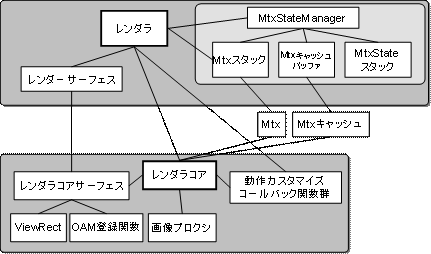
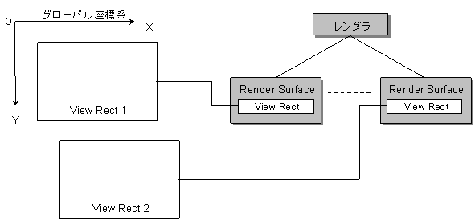

レンダラ概要
概念図

説明
レンダラは、キャラクタを画面に描画するためのＡＰＩを提供します。
レンダラモジュールは、レンダラコアモジュールとレンダラモジュールに大別できます。
レンダタコアモジュールはレンダラモジュールの描画処理を担当し、
レンダラモジュールの下請けモジュールとして動作します。
ユーザはレンダラコアモジュールを直接利用することも可能です。
レンダラモジュールは行列スタックを内部に持ち、描画対象に対するアフィン変換操作を管理します。
２つの2Dグラフィックエンジンへのアフィンパラメータの設定処理も行います。
レンダラは、幾つかのレンダーサーフェスを持ちます。
このレンダーサーフェスには、画面に表示される範囲を示す矩形領域と、
その領域を描画するＡＰＩの情報に関する情報を持ちます。
レンダーサーフェスを適切に設定することで、キャラクタが、メイン画面のＯＡＭ、
サブ画面のＯＡＭ、ソフトウェアスプライトのいずれを使用して描画する場合でも、
同じＡＰＩを使用して描画を行う事が出来ます。
レンダーサーフェスと仮想画面

レンダラでは、１つの大きな仮想画面にゲームキャラクタが配置されているものとして扱われます。
レンダラが持つそれぞれのレンダーサーフェスには、この仮想画面上の任意の矩形領域が設定されています。
この矩形領域にゲームキャラクタが入った場合に、そのゲームキャラクタは画面に表示されます。
レンダーサーフェスと描画API
ゲームキャラクタが、何れかのレンダーサーフェスに設定された矩形領域内に入ると、
そのゲームキャラクタは画面に描画されます。ゲームキャラクタをどのように描画がするかは、
レンダーサーフェス自身が情報を持っています。
この情報により、ゲームキャラクタは、メイン画面のＯＡＭ、サブ画面のＯＡＭ、
ソフトウェアスプライトの３つの内のどれかに描画されます。
レンダラ行列スタック
レンダラは内部に行列スタックを持っています。行列スタックの一般的な説明については、専門書を御参考ください。
レンダラは2Dグラフィックスエンジンのアフィンパラメータの消費量を最小限にとどめるように、処理を行います。
基本的なルールを以下に箇条書きにします。
･単一のBegin - End Rendering()間で使用できるアフィンパラメータの種類は３２が最大である。それ以上の場合は複数のレンダリングに分割する必要がある。３２を超えた場合、正しい描画結果が得られない。
･平行移動操作は新たにアフィンパラメータを消費しない。
･スケール、回転操作を行った場合はカレント行列変更フラグがたつ。
･カレント行列変更フラグがたった状態で描画登録が起こった場合、カレント行列をアフィンパラメータに読み込む。その際、新たにアフィンパラメータがひとつ消費される。
･回転に逆回転を加えるなどして、回転変換成分がゼロになったとしてもカレント行列変更フラグはリセットされない。
(関連：レンダラ行列状態）
参照
なし
履歴
2004/12/06 初版